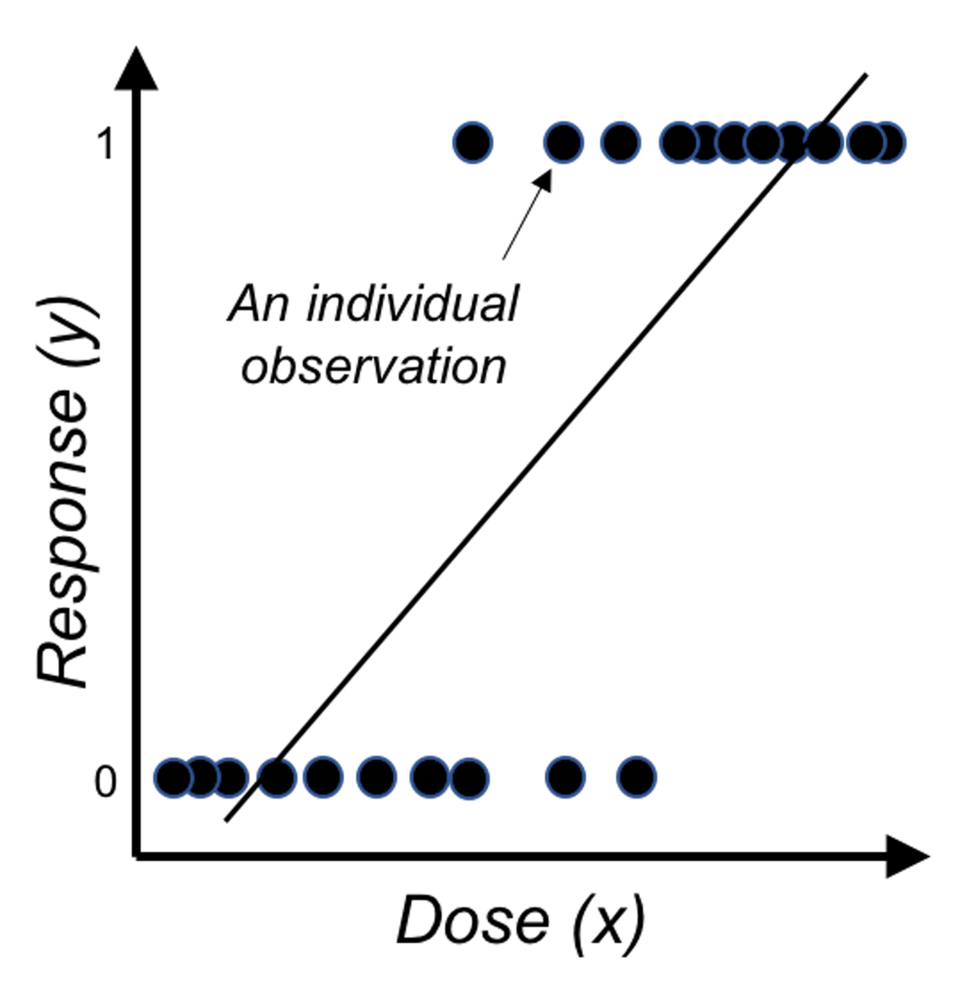
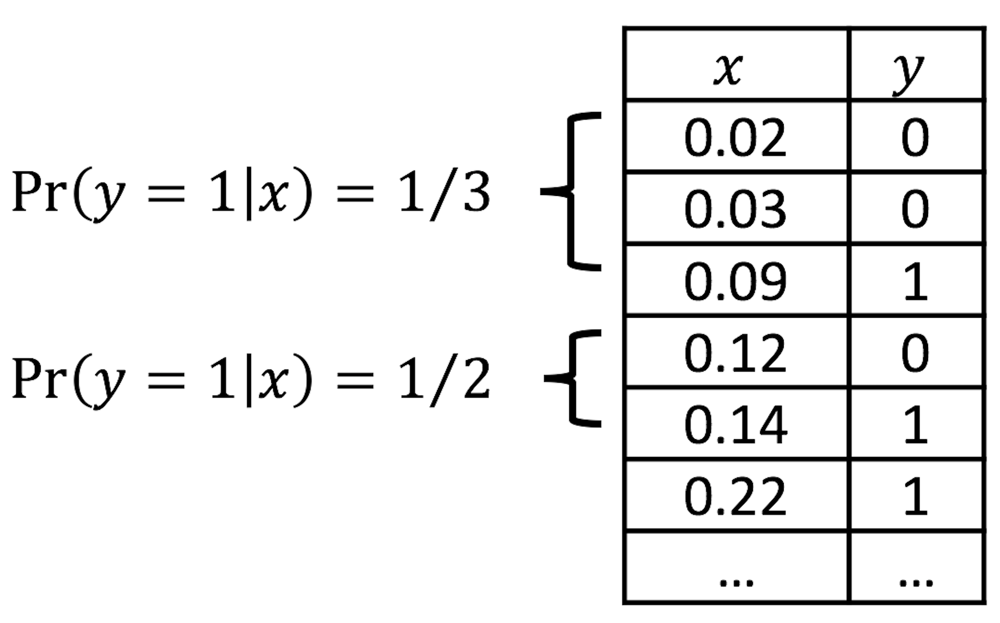
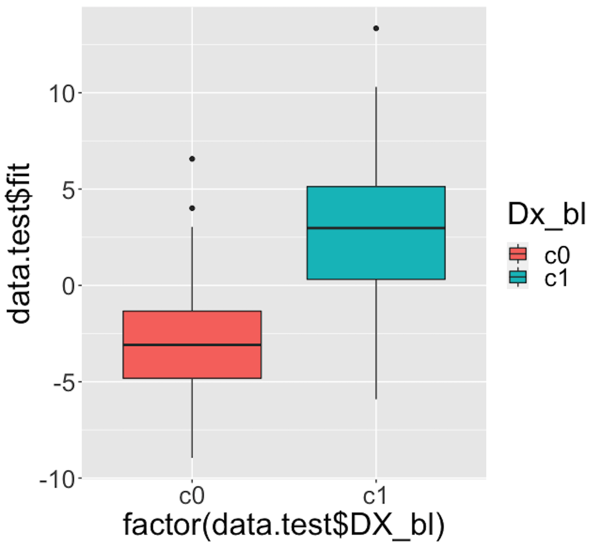
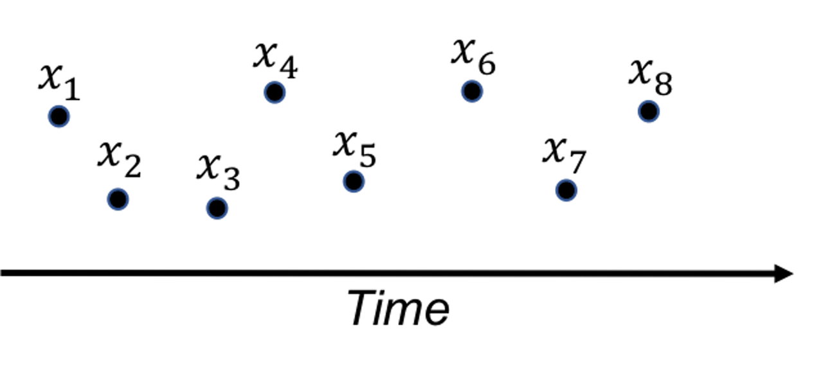
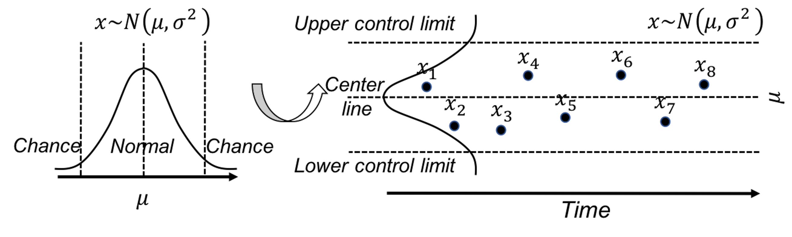
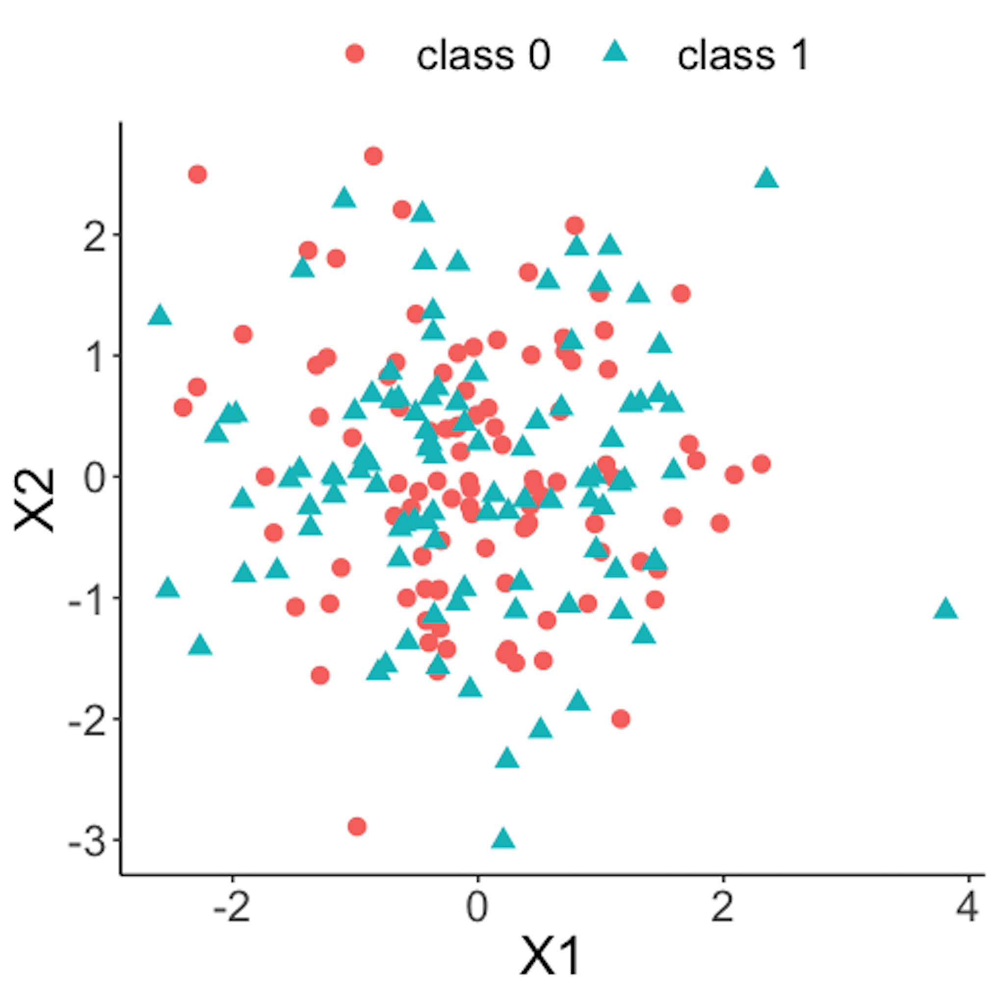
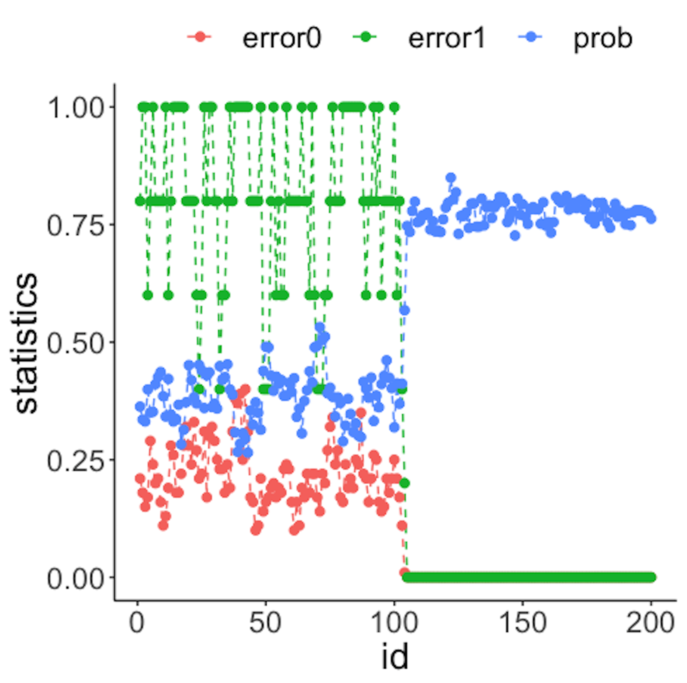
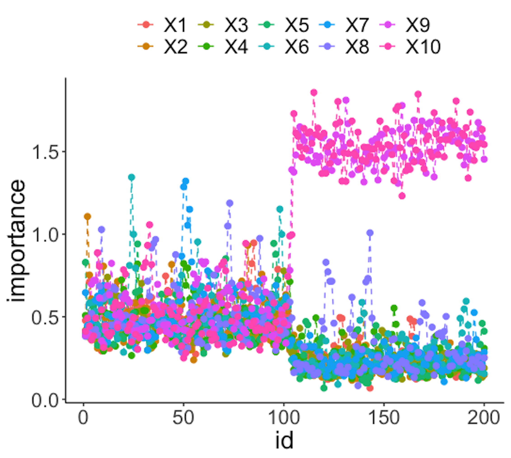
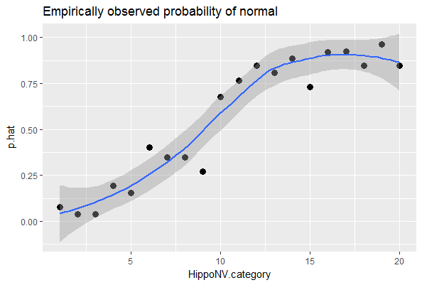
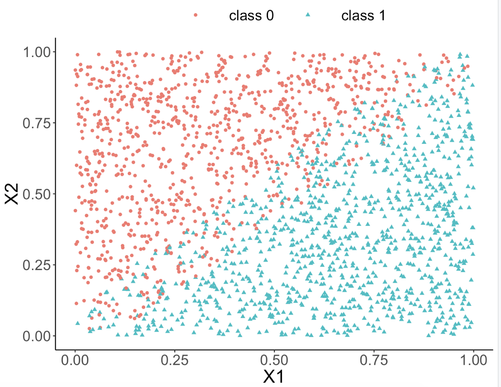

Chapter 3. Recognition: Logistic Regression & Ranking
Overview
Chapter 3 is about Recognition. This is an important skill in real-world practices of data analytics. It is to recognize the same abstracted form embedded in different real-world problems. No matter how different the problem looks, we hope to leverage existing models and solutions that have been proven effective for the forms that are recognizable in the problem. This is why we say the same model/theory could be applied in multiple areas52 Another practical metaphor is: a model is a hammer, and applications are nails..
This is not to say that a real-world problem is equivalent to an abstracted problem. A dialectic thinking is needed here to understand the relationship between a real-world problem and its reduced form, an abstracted formulation. On one hand, for a real-world problem to be real-world, it always has something that exceeds the boundary of a reduced form. On the other hand, for a real-world problem to be solvable, it has to have some kinds of forms.
Many operations researchers believe that being able to recognize these abstracted forms holds the key to solve real-world problems effectively53 Some said, formulation is an art; and a good formulation contributes more than \(50\%\) in solving the problem.. For some abstracted forms, indeed we have studied them well and are confident to provide a sense of “closure.” It takes a sense of closure to conclude that we have solved a real-world problem, or at least we have reached the best solution as far as our knowledge permits. And we have established criteria to evaluate how well we have solved these abstract forms. Those are the territories where we have surveyed in detail and in depth. If to solve a real-world problem is to battle a dragon in its lair, recognition is all about paving the way for the dragon to follow the bread crumbs so that we can battle it in a familiar battlefield.
Logistic regression model
Rationale and formulation
 Figure 27: Direct application of linear regression on binary outcome, i.e., illustration of Eq. (23) on a one-predictor problem where \(x\) is the dose of a treatment and \(y\) is the binary outcome variable.
Linear regression models are introduced in Chapter 2 as a tool to predict a continuous response using a few input variables. In some applications, the response variable is a binary variable that denotes two classes. For example, in the AD dataset, we have a variable called DX_bl that encodes the diagnosis information of the subjects, i.e., 0 denotes normal, while 1 denotes diseased.
We have learned about linear regression models to connect the input variables with the outcome variable. It is natural to wonder if the linear regression framework could still be useful here. If we write the regression equation
\[\begin{equation} \small \text{The goal: } \underbrace{y}_{\text{Binary}}=\underbrace{\beta_{0}+\sum_{i=1}^{p} \beta_{i} x_{i}+\varepsilon.}_{\text{Continuous and unbounded}} \tag{23} \end{equation}\]
Something doesn’t make sense. The reason is obvious: the right-hand side of Eq. (23) is continuous without bounds, while the left hand side of the equation is a binary variable. A graphical illustration is shown in Figure 27. So we have to modify this equation, either the right-hand side or the left-hand side.
Since we want it to be a linear model, it is better not to modify the right-hand side. So look at the left-hand side. Why we have to stick with the natural scale of \(y\)? We could certainly work out a more linear-model-friendly scale. For example, instead of predicting \(y\), how about predicting the probability \(Pr(y=1|\boldsymbol{x})\)? If we know \(Pr(y=1|\boldsymbol{x})\), we can certainly convert it to the scale of \(y\).54 I.e., if \(Pr(y=1|\boldsymbol{x}) \geq 0.5\), we conclude \(y = 1\); otherwise, \(y=0\).
Thus, we consider the following revised goal
\[\begin{equation} \small \text{Revised goal: } \underbrace{Pr(y=1|\boldsymbol{x})}_{\text{Continuous but bounded}}=\underbrace{\beta_{0}+\sum_{i=1}^{p} \beta_{i} x_{i}+\varepsilon.}_{\text{Continuous and unbounded}} \tag{24} \end{equation}\]
Changing our outcome variable from \(y\) to \(Pr(y=1|\boldsymbol{x})\) is a good move, since \(Pr(y=1|\boldsymbol{x})\) is on a continuous scale. However, as it is a probability, it has to be in the range of \([0,1]\). We need more modifications to make things work.
If we make a lot of modifications and things barely work, we may have lost the essence. What is the essence of the linear model that we would like to leverage in this binary prediction problem? Interpretability—sure, the linear form seems easy to understand, but as we have pointed out in Chapter 2, this interpretability comes with a price, and we need to be cautious when we draw conclusions about the linear model, although there are easy conventions for us to follow. On the other hand, it would sound absurd if we dig into the literature and found there had been no linear model for binary classification problems. Linear model is the baseline of the data analytics enterprise. It is the starting point of our data analytics adventure. That is how important it is.
Back to the business to modify the linear formalism for a binary classification problem. Now our outcome variable is \(Pr(y=1|\boldsymbol{x})\), and we realize it still doesn’t match with the linear form \(\beta_0+\sum_{i=1}^p \beta_i x_i\). What is the essential task here? If we put the puzzle in a context, it may give us some hints. For example, if our goal is to predict the risk of Alzheimer’s disease for subjects who are aged \(65\) years or older, we have known the average risk from recent national statistics is \(8.8\%\). Now if we have a group of individuals who are aged 65 years or older, we could make a risk prediction for them as a group, i.e., 8.8%. But this is not the best we could do for each individual. We could examine an individual’s characteristics such as the gene APOE55 APOE polymorphic alleles play a major role in determining the risk of Alzheimer’s disease (AD): individuals carrying the \(\epsilon4\) allele are at increased risk of AD compared with those carrying the more common \(\epsilon3\) allele, whereas the \(\epsilon2\) allele decreases risk. and see if an individual has higher (or lower) risk than the average. Now comes the inspiration: what if we can rank the risk of the individuals based on their characteristics, can it help with the final goal that is to predict the outcome variable \(y\)?
 Figure 28: Application of the logistic function on binary outcome
Figure 28: Application of the logistic function on binary outcome
Now we look closer into the idea of a linear form, and we realize it is more useful in ranking the possibilities rather than directly being eligible probabilities.
\[\begin{equation} \small \text{Revised goal: } Pr(y=1|\boldsymbol{x})\propto\beta_0+\sum_{i=1}^p\, \beta_i x_i. \tag{25} \end{equation}\]
In other words, a linear form can make a comparison of two inputs, say, \(\boldsymbol{x}_i\) and \(\boldsymbol{x}_j\), and evaluates which one leads to a higher probability of \(Pr(y=1|\boldsymbol{x})\).
It is fine that we use the linear form to generate numerical values that rank the subjects. We just need one more step to transform those ranks into probabilities. Statisticians have found that the logistic function is suitable here for the transformation
\[\begin{equation} \small Pr(y=1|\boldsymbol{x}) = \frac{1}{1+e^{-\left(\beta_0+\sum\nolimits_{i=1}\nolimits^{p}\, \beta_i x_i\right)}}. \tag{26} \end{equation}\]
Figure 28 shows that the logistic function indeed provides a better fit of the data than the linear function as shown in Figure 27.
Eq. (26) can be rewritten as Eq. (27)
\[\begin{equation} \small \log {\frac{Pr(y=1|\boldsymbol{x})}{1-Pr(y=1|\boldsymbol{x})}}=\beta_0+\sum\nolimits_{i=1}\nolimits^{p}\beta_i x_i. \tag{27} \end{equation}\]
This is the so-called logistic regression model. The name stems from the transformation of \(Pr(y=1|\boldsymbol{x})\) used here, i.e., the \(\log \frac{Pr(y=1|\boldsymbol{x})}{1-Pr(y=1|\boldsymbol{x})}\), which is the logistic transformation that has been widely used in many areas such as physics and signal processing.
Note that we have mentioned that we can predict \(y=1\) if \(Pr(y=1|\boldsymbol{x})\geq0.5\), and \(y=0\) if \(Pr(y=1|\boldsymbol{x})<0.5\). While \(0.5\) seems naturally a cut-off value here, it is not necessarily optimal in every application. We could use the techniques discussed in Chapter 5 such as cross-validation to decide what is the optimal cut-off value in practice.
 Figure 29: Illustration of the discretization process, e.g., two categories (\(0.0-0.1\) and \(0.1-0.2\)) of \(x\) are shown
Visual inspection of data. How do we know that our data could be characterized using a logistic function?
We can discretize the predictor \(x\) in Figure 28 into a few categories, compute the empirical estimate of \(Pr(y=1|x)\) in each category, and create a new data table. This procedure is illustrated in Figure 29.
Suppose that we discretize the data in Figure 28 and obtain the result as shown in Table 6.
Table 6: Example of a result after discretization
| Level of \(x\) | \(1\) | \(2\) | \(3\) | \(4\) | \(5\) | \(6\) | \(7\) | \(8\) |
|---|---|---|---|---|---|---|---|---|
| \(Pr(y=1\)|\(x)\) | \(0.00\) | \(0.04\) | \(0.09\) | \(0.20\) | \(0.59\) | \(0.89\) | \(0.92\) | \(0.99\) |
Then, we revise the scale of the \(y\)-axis of Figure 28 to be \(Pr(y=1|x)\), and create Figure 30. It could be seen that the empirical curve does fit the form of Eq. (26).
 Figure 30: Revised scale of the \(y\)-axis of Figure 28, i.e., illustration of Eq. (26)
Figure 30: Revised scale of the \(y\)-axis of Figure 28, i.e., illustration of Eq. (26)
Theory and method
We collect data to estimate the regression parameters of the logistic regression in Eq. (27). Denote the sample size as \(N\). \(\boldsymbol{y} \in R^{N \times 1}\) denotes the \(N\) measurements of the outcome variable, and \(\boldsymbol{X} \in R^{N \times (p+1)}\) denotes the data matrix that includes the \(N\) measurements of the \(p\) input variables plus the dummy variable for the intercept coefficient \(\beta_0\). As in a linear regression model, \(\boldsymbol{\beta}\) is the column vector form of the regression parameters.
The likelihood function. The likelihood function evaluates how well a given set of parameters fit the data56 The least squares loss function we derived in Chapter 2 could also be derived based on the likelihood function of a linear regression model.. The likelihood function has a specific definition, i.e., the conditional probability of the data conditional on the given set of parameters. Here, the dataset is \(D = \left \{\boldsymbol{X}, \boldsymbol{y} \right\}\), so the likelihood function is defined as \(Pr(D | \boldsymbol{\beta})\). It could be broken down into \(N\) components57 Note that, it is assumed that \(D\) consists of \(N\) independent data points.
\[\begin{equation*} \small Pr(D | \boldsymbol{\beta}) = \prod\nolimits_{n=1}\nolimits^{N}Pr(\boldsymbol{x}_n, {y_n} | \boldsymbol{\beta}). \end{equation*}\]
For data point \((\boldsymbol{x}_n, {y_n})\), the conditional probability \(Pr(\boldsymbol{x}_n, {y_n} | \boldsymbol{\beta})\) is
\[\begin{equation} Pr(\boldsymbol{x}_n, {y_n} | \boldsymbol{\beta})=\begin{cases} p(\boldsymbol{x}_n), & if \, y_n = 1 \\ 1-p(\boldsymbol{x}_n), & if \, y_n = 0. \\ \end{cases} \end{equation}\]
Here, \(p(\boldsymbol{x}_n) = Pr(y=1|\boldsymbol{x})\).
A succinct form to represent these two scenarios together is
\[\begin{equation*} \small Pr(\boldsymbol{x}_n, {y_n} | \boldsymbol{\beta}) = p(\boldsymbol{x}_n)^{y_n}\left[1-p(\boldsymbol{x}_n)\right]^{1-y_n}. \end{equation*}\]
Then we can generalize this to all the \(N\) data points, and derive the complete likelihood function as
\[\begin{equation*} \small Pr(D | \boldsymbol{\beta})=\prod\nolimits_{n=1}\nolimits^{N}p(\boldsymbol{x}_n)^{y_n}\left[1-p(\boldsymbol{x}_n)\right]^{1-y_n}. \end{equation*}\]
It is common to write up its log-likelihood function, defined as \(l(\boldsymbol \beta) = \log Pr(D | \boldsymbol{\beta})\), to turn products into sums
\[\begin{equation*} \small l(\boldsymbol \beta)=\sum\nolimits_{n=1}\nolimits^N\, \left \{ y_n \log p(\boldsymbol{x}_n)+(1-y_n)\log [1-p(\boldsymbol{x}_n)]\right\}. \end{equation*}\]
By plugging in the definition of \(p(\boldsymbol{x}_n)\), this could be further transformed into
\[\begin{equation} \small \begin{split} l(\boldsymbol \beta) = \sum\nolimits_{n=1}\nolimits^N -\log \left(1+e^{\beta_0+\sum\nolimits_{i=1}\nolimits^p\, \beta_i x_{ni}} \right) - \\ \sum\nolimits_{n=1}\nolimits^N y_n(\beta_0+\sum\nolimits_{i=1}\nolimits^p\, \beta_i x_{ni}). \end{split} \tag{28} \end{equation}\]
Note that, for any probabilistic model58 A probabilistic model has a joint distribution for all the random variables concerned in the model. Interested readers can read this comprehensive book: Koller, D. and Friedman, N., Probabilistic Graphical Models: Principles and Techniques, The MIT Press, 2009., we could derive the likelihood function in one way or another, in a similar fashion as we have done for the logistic regression model.
Algorithm. Eq. (28) provides the objective function of a maximization problem, i.e., the parameter that maximizes \(l(\boldsymbol \beta)\) is the best parameter. Theoretically, we could use the First Derivative Test to find the optimal solution. The problem here is that there is no closed-form solution found if we directly apply the First Derivative Test.
Instead, the Newton-Raphson algorithm is commonly used to optimize the log-likelihood function of the logistic regression model. It is an iterative algorithm that starts from an initial solution, continues to seek updates of the current solution using the following formula
\[\begin{equation} \small \boldsymbol \beta^{new} = \boldsymbol \beta^{old} - (\frac{\partial^2 l(\boldsymbol \beta)}{\partial \boldsymbol \beta \partial \boldsymbol \beta^T})^{-1} \frac{\partial l(\boldsymbol \beta)}{\partial \boldsymbol \beta}. \tag{29} \end{equation}\]
Here, \(\frac{\partial l(\boldsymbol \beta)}{\partial \boldsymbol \beta}\) is the gradient of the current solution, that points to the direction following which we should increment the current solution to improve on the objective function. On the other hand, how far we should go along this direction is decided by the step size factor, defined as \((\frac{\partial^2 l(\boldsymbol \beta)}{\partial \boldsymbol \beta \partial \boldsymbol \beta^T})^{-1}\). Theoretical results have shown that this formula could converge to the optimal solution. An illustration is given in Figure 31.
Figure 31: Illustration of the gradient-based optimization algorithms that include the Newton-Raphson algorithm as an example. An algorithm starts from an initial solution (e.g., \(x_0\) and \(x_0'\) are two examples of initial solutions in the figure), uses the gradient to find the direction, and moves the solution along that direction with the computed step size, until it finds the optimal solution \(x^*\).

The Newton-Raphson algorithm presented in Eq. (29) is general. To apply it in a logistic regression model, since we have an explicit form of \(l(\boldsymbol \beta)\), we can derive the gradient and step size as shown below
\[\begin{align*} \frac{\partial l(\boldsymbol{\beta})}{\partial \boldsymbol{\beta}} &= \sum\nolimits_{n=1}^{N}\boldsymbol{x}_n\left[y_n -p(\boldsymbol{x}_n)\right], \\ \frac{\partial^2 l(\boldsymbol{\beta})}{\partial \boldsymbol{\beta} \partial \boldsymbol{\beta}^T} &= -\sum\nolimits_{n=1}^N \boldsymbol{x}_n\boldsymbol{x}_n^T p(\boldsymbol{x}_n)\left[1-p(\boldsymbol{x}_n)\right]. \end{align*}\]
A certain structure can be revealed if we rewrite it in matrix form59 \(\boldsymbol{p}(\boldsymbol{x})\) is a \(N\times1\) column vector of \(p(\boldsymbol{x}_n)\), and \(\boldsymbol{W}\) is a \(N\times N\) diagonal matrix with the \(n^{th}\) diagonal element as \(p(\boldsymbol{x}_n )\left[1-p(\boldsymbol{x}_n)\right]\).
\[\begin{align} \frac{\partial l(\boldsymbol{\beta})}{\partial \boldsymbol{\beta}} = \boldsymbol{X}^T\left[\boldsymbol{y}-\boldsymbol{p}(\boldsymbol{x})\right], \\ \frac{\partial^2 l(\boldsymbol{\beta})}{\boldsymbol{\beta} \boldsymbol{\beta}^T} = -\boldsymbol{X}^T\boldsymbol{W}\boldsymbol{X}. \tag{30} \end{align}\]
Plugging Eq. (30) into the updating formula as shown in Eq. (29), we can derive a specific formula for logistic regression
\[\begin{align} &\boldsymbol{\beta}^{new} = \boldsymbol{\beta}^{old} + (\boldsymbol{X}^T\boldsymbol{WX})^{-1}\boldsymbol{X}^T\left[ \boldsymbol{y}-\boldsymbol{p}(\boldsymbol{x}) \right], \\ & = (\boldsymbol{X}^T\boldsymbol{WX})^{-1}\boldsymbol{X}^T\boldsymbol{W} \left(\boldsymbol{X}\boldsymbol{\beta}^{old}+\boldsymbol{W}^{-1} \left[ \boldsymbol{y} - \boldsymbol{p}(\boldsymbol{x})\right] \right), \\ & = (\boldsymbol{X}^T\boldsymbol{WX})^{-1}\boldsymbol{X}^T\boldsymbol{Wz}. \tag{31} \end{align}\]
Here, \(\boldsymbol{z}=\boldsymbol{X}\boldsymbol{\beta}^{old} + \boldsymbol{W}^{-1}(\boldsymbol{y} - \boldsymbol{p}(\boldsymbol{x}))\).
Putting all these together, a complete flow of the algorithm is shown below
1. Initialize \(\boldsymbol{\beta}.\)60 I.e., use random values for \(\boldsymbol{\beta}\).
2. Compute \(\boldsymbol{p}(\boldsymbol{x}_n)\) by its definition: \(\boldsymbol{p}(\boldsymbol{x}_n )=\frac{1}{1+e^{-(\beta_0+\sum_{i=1}^p\, \beta_i x_{ni})}}\) for \(n=1,2,\ldots,N\).
3. Compute the diagonal matrix \(\boldsymbol{W}\), with the \(n^{th}\) diagonal element as \(\boldsymbol{p}\left(\boldsymbol{x}_{n}\right)\left[1-\boldsymbol{p}\left(\boldsymbol{x}_{n}\right)\right]\) for \(n=1,2,…,N\).
4. Set \(\boldsymbol{z}\) as \(= \boldsymbol{X} \boldsymbol{\beta}+\boldsymbol{W}^{-1}[\boldsymbol{y}-\boldsymbol{p}(\boldsymbol{x})]\).
5. Set \(\boldsymbol{\beta} = \left(\boldsymbol{X}^{T} \boldsymbol{W X}\right)^{-1} \boldsymbol{X}^{T} \boldsymbol{W} \boldsymbol{z}\).
6. If the stopping criteria61 A common stopping criteria is to evaluate the difference between two consecutive solutions, i.e., if the Euclidean distance between the two vectors, \(\boldsymbol{\beta}^{new}\) and \(\boldsymbol{\beta}^{old}\), is less than \(10^{-4}\), then it is considered no difference and the algorithm stops. is met, stop; otherwise, go back to step 2.
Generalized least squares estimator. The estimation formula as shown in Eq. (31) resembles the generalized least squares (GLS) estimator of a regression model, where each data point \((\boldsymbol{x}_n,y_n)\) is associated with a weight \(w_n\). This insight revealed by the Newton-Raphson algorithm suggests a new perspective to look at the logistic regression model. The updating formula shown in Eq. (31) suggests that, in each iteration of parameter updating, we actually solve a weighted regression model as
\[\begin{equation*} \small \boldsymbol{\beta}^{new} \leftarrow \mathop{\arg\min}_{\boldsymbol{\beta}} (\boldsymbol{z}-\boldsymbol{X}\boldsymbol \beta)^T\boldsymbol{W}(\boldsymbol{z}-\boldsymbol{X}\boldsymbol{\beta}). \end{equation*}\]
For this reason, the algorithm we just introduced is also called the Iteratively Reweighted Least Squares (IRLS) algorithm. \(\boldsymbol{z}\) is referred to as the adjusted response.
R Lab
In the AD dataset, the variable DX_bl encodes the diagnosis information, i.e.,0 denotes normal while 1 denotes diseased. We build a logistic regression model using DX_bl as the outcome variable.
The 7-Step R Pipeline. Step 1 is to import data into R.
# Step 1 -> Read data into R workstation
# RCurl is the R package to read csv file using a link
library(RCurl)
url <- paste0("https://raw.githubusercontent.com",
"/analyticsbook/book/main/data/AD.csv")
AD <- read.csv(text=getURL(url))
# str(AD)Step 2 is for data preprocessing.
# Step 2 -> Data preprocessing
# Create your X matrix (predictors) and Y vector (outcome variable)
X <- AD[,2:16]
Y <- AD$DX_bl
# The following code makes sure the variable "DX_bl" is a "factor".
# It denotes "0" as "c0" and "1" as "c1", to highlight the fact
# that "DX_bl" is a factor variable, not a numerical variable.
Y <- paste0("c", Y)
# as.factor is to convert any variable into the
# format as "factor" variable.
Y <- as.factor(Y)
# Then, we integrate everything into a data frame
data <- data.frame(X,Y)
names(data)[16] = c("DX_bl")
set.seed(1) # generate the same random sequence
# Create a training data (half the original data size)
train.ix <- sample(nrow(data),floor( nrow(data)/2) )
data.train <- data[train.ix,]
# Create a testing data (half the original data size)
data.test <- data[-train.ix,]Step 3 is to use the function glm() to build a logistic regression model62 Typehelp(glm) in R Console to learn more of the function..
# Step 3 -> Use glm() function to build a full model
# with all predictors
logit.AD.full <- glm(DX_bl~., data = data.train,
family = "binomial")
summary(logit.AD.full)And the result is shown below
## Call:
## glm(formula = DX_bl ~ ., family = "binomial", data = data.train)
##
## Deviance Residuals:
## Min 1Q Median 3Q Max
## -2.4250 -0.3645 -0.0704 0.2074 3.1707
##
## Coefficients:
## Estimate Std. Error z value Pr(>|z|)
## (Intercept) 43.97098 7.83797 5.610 2.02e-08 ***
## AGE -0.07304 0.03875 -1.885 0.05945 .
## PTGENDER 0.48668 0.46682 1.043 0.29716
## PTEDUCAT -0.24907 0.08714 -2.858 0.00426 **
## FDG -3.28887 0.59927 -5.488 4.06e-08 ***
## AV45 2.09311 1.36020 1.539 0.12385
## HippoNV -38.03422 6.16738 -6.167 6.96e-10 ***
## e2_1 0.90115 0.85564 1.053 0.29225
## e4_1 0.56917 0.54502 1.044 0.29634
## rs3818361 -0.47249 0.45309 -1.043 0.29703
## rs744373 0.02681 0.44235 0.061 0.95166
## rs11136000 -0.31382 0.46274 -0.678 0.49766
## rs610932 0.55388 0.49832 1.112 0.26635
## rs3851179 -0.18635 0.44872 -0.415 0.67793
## rs3764650 -0.48152 0.54982 -0.876 0.38115
## rs3865444 0.74252 0.45761 1.623 0.10467
## ---
## Signif. codes: 0 ‘***’ 0.001 ‘**’ 0.01 ‘*’ 0.05 ‘.’ 0.1 ‘ ’ 1
##
## (Dispersion parameter for binomial family taken to be 1)
##
## Null deviance: 349.42 on 257 degrees of freedom
## Residual deviance: 139.58 on 242 degrees of freedom
## AIC: 171.58
##
## Number of Fisher Scoring iterations: 7Step 4 is to use the step() function for model selection.
# Step 4 -> use step() to automatically delete
# all the insignificant
# variables
# Also means, automatic model selection
logit.AD.reduced <- step(logit.AD.full, direction="both",
trace = 0)
summary(logit.AD.reduced)## Call:
## glm(formula = DX_bl ~ AGE + PTEDUCAT + FDG + AV45 + HippoNV +
## rs3865444, family = "binomial", data = data.train)
##
## Deviance Residuals:
## Min 1Q Median 3Q Max
## -2.38957 -0.42407 -0.09268 0.25092 2.73658
##
## Coefficients:
## Estimate Std. Error z value Pr(>|z|)
## (Intercept) 42.68795 7.07058 6.037 1.57e-09 ***
## AGE -0.07993 0.03650 -2.190 0.02853 *
## PTEDUCAT -0.22195 0.08242 -2.693 0.00708 **
## FDG -3.16994 0.55129 -5.750 8.92e-09 ***
## AV45 2.62670 1.18420 2.218 0.02655 *
## HippoNV -36.22215 5.53083 -6.549 5.79e-11 ***
## rs3865444 0.71373 0.44290 1.612 0.10707
## ---
## Signif. codes: 0 ‘***’ 0.001 ‘**’ 0.01 ‘*’ 0.05 ‘.’ 0.1 ‘ ’ 1
##
## (Dispersion parameter for binomial family taken to be 1)
##
## Null deviance: 349.42 on 257 degrees of freedom
## Residual deviance: 144.62 on 251 degrees of freedom
## AIC: 158.62
##
## Number of Fisher Scoring iterations: 7You may have noticed that some variables included in this model are actually not significant.
Step 4 compares the final model selected by the step() function with the full model.
# Step 4 continued
anova(logit.AD.reduced,logit.AD.full,test = "LRT")
# The argument, test = "LRT", means that the p-value
# is derived via the Likelihood Ratio Test (LRT).And we can see that the two models are not statistically different, i.e., p-value is \(0.8305\).
Step 5 is to evaluate the overall significance of the final model63 Step 4 compares two models. Step 5 tests if a model has a lack-of-fit with data. A model could be better than another, but it is possible that both of them fit the data poorly..
# Step 5 -> test the significance of the logistic model
# Test residual deviance for lack-of-fit
# (if > 0.10, little-to-no lack-of-fit)
dev.p.val <- 1 - pchisq(logit.AD.reduced$deviance,
logit.AD.reduced$df.residual)And it can be seen that the model shows no lack-of-fit as the p-value is \(1\).
dev.p.val## [1] 1Step 6 is to use your final model for prediction. We can do so using the predict() function.
# Step 6 -> Predict on test data using your
# logistic regression model
y_hat <- predict(logit.AD.reduced, data.test)Step 7 is to evaluate the prediction performance of the final model.
# Step 7 -> Evaluate the prediction performance of
# your logistic regression model
# (1) Three main metrics for classification: Accuracy,
# Sensitivity (1- False Positive),
# Specificity (1 - False Negative)
y_hat2 <- y_hat
y_hat2[which(y_hat > 0)] = "c1"
# Since y_hat here is the values from the linear equation
# part of the logistic regression model, by default,
# we should use 0 as a cut-off value (only by default,
# not optimal though), i.e., if y_hat < 0, we name it
# as one class, and if y_hat > 0, it is another class.
y_hat2[which(y_hat < 0)] = "c0"
library(caret)
# confusionMatrix() in the package "caret" is a powerful
# function to summarize the prediction performance of a
# classification model, reporting metrics such as Accuracy,
# Sensitivity (1- False Positive),
# Specificity (1 - False Negative), to name a few.
library(e1071)
confusionMatrix(table(y_hat2, data.test$DX_bl))
# (2) ROC curve is another commonly reported metric for
# classification models
library(pROC)
# pROC has the roc() function that is very useful here
plot(roc(data.test$DX_bl, y_hat),
col="blue", main="ROC Curve")
 Figure 32: The ROC curve of the final model
Figure 32: The ROC curve of the final model
Results are shown below. We haven’t discussed the ROC curve yet, which will be a main topic in Chapter 5. At this moment, remember that a model with a ROC curve that has a larger Area Under the Curve (AUC) is a better model. And a model whose ROC curve ties with the diagonal straight line (as shown in Figure 32) is equivalent with random guess.
## y_hat2 c0 c1
## c0 117 29
## c1 16 97
##
## Accuracy : 0.8263
## 95% CI : (0.7745, 0.8704)
## No Information Rate : 0.5135
## P-Value [Acc > NIR] : < 2e-16
##
## Kappa : 0.6513
##
## Mcnemar's Test P-Value : 0.07364
##
## Sensitivity : 0.8797
## Specificity : 0.7698
## Pos Pred Value : 0.8014
## Neg Pred Value : 0.8584
## Prevalence : 0.5135
## Detection Rate : 0.4517
## Detection Prevalence : 0.5637
## Balanced Accuracy : 0.8248
##
## 'Positive' Class : c0 Model uncertainty. The \(95 \%\) confidence interval (CI) of the regression coefficients can be derived, as shown below
## coefficients and 95% CI
cbind(coef = coef(logit.AD.reduced), confint(logit.AD.reduced))Results are
## coef 2.5 % 97.5 %
## (Intercept) 42.68794758 29.9745022 57.88659748
## AGE -0.07993473 -0.1547680 -0.01059348
## PTEDUCAT -0.22195425 -0.3905105 -0.06537066
## FDG -3.16994212 -4.3519800 -2.17636447
## AV45 2.62670085 0.3736259 5.04703489
## HippoNV -36.22214822 -48.1671093 -26.35100122
## rs3865444 0.71373441 -0.1348687 1.61273264Prediction uncertainty. As in linear regression, we could derive the variance of the estimated regression coefficients \(\operatorname{var}(\hat{\boldsymbol{\beta}})\); then, since \(\boldsymbol{\hat{y}} = \boldsymbol{X} \hat{\boldsymbol{\beta}}\), we can derive \(\operatorname{var}(\boldsymbol{\hat{y}})\)64 The linearity assumption between \(\boldsymbol{x}\) and \(y\) enables the explicit characterization of this chain of uncertainty propagation.. Skipping the technical details, the \(95\%\) CI of the predictions are obtained using the R code below
# Remark: how to obtain the 95% CI of the predictions
y_hat <- predict(logit.AD.reduced, data.test, type = "link",
se.fit = TRUE)
# se.fit = TRUE, is to get the standard error in the predictions,
# which is necessary information for us to construct
# the 95% CI of the predictions
data.test$fit <- y_hat$fit
data.test$se.fit <- y_hat$se.fit
# We can readily convert this information into the 95% CIs
# of the predictions (the way these 95% CIs are
# derived are again, only in approximated sense).
# CI for fitted values
data.test <- within(data.test, {
# added "fitted" to make predictions at appended temp values
fitted = exp(fit) / (1 + exp(fit))
fit.lower = exp(fit - 1.96 * se.fit) / (1 +
exp(fit - 1.96 * se.fit))
fit.upper = exp(fit + 1.96 * se.fit) / (1 +
exp(fit + 1.96 * se.fit))
})Odds ratio. The odds ratio (OR) quantifies the strength of the association between two events, A and B. It is defined as the ratio of the odds of A in the presence of B and the odds of A in the absence of B, or equivalently due to symmetry.
If the OR equals \(1\), A and B are independent;
If the OR is greater than \(1\), the presence of one event increases the odds of the other event;
If the OR is less than \(1\), the presence of one event reduces the odds of the other event.
A regression coefficient of a logistic regression model can be converted into an odds ratio, as done in the following codes.
## odds ratios and 95% CI
exp(cbind(OR = coef(logit.AD.reduced),
confint(logit.AD.reduced)))The odds ratios and their \(95\%\) CIs are
## OR 2.5 % 97.5 %
## (Intercept) 3.460510e+18 1.041744e+13 1.379844e+25
## AGE 9.231766e-01 8.566139e-01 9.894624e-01
## PTEDUCAT 8.009520e-01 6.767113e-01 9.367202e-01
## FDG 4.200603e-02 1.288128e-02 1.134532e-01
## AV45 1.382807e+01 1.452993e+00 1.555605e+02
## HippoNV 1.857466e-16 1.205842e-21 3.596711e-12
## rs3865444 2.041601e+00 8.738306e-01 5.016501e+00Exploratory Data Analysis (EDA). EDA essentially conceptualizes the analysis process as a dynamic one, sometimes with a playful tone65 And it is probably because of this conceptual framework, EDA happens to use a lot of figures to explore the data. Figures are rich in information, some are not easily generalized into abstract numbers. EDA could start with something simple. For example, we can start with a smaller model rather than throw everything into the analysis.
Let’s revisit the data analysis done in the 7-step R pipeline and examine a simple logistic regression model with only one predictor, FDG.
# Fit a logistic regression model with FDG
logit.AD.FDG <- glm(DX_bl ~ FDG, data = AD, family = "binomial")
summary(logit.AD.FDG)##
## Call:
## glm(formula = DX_bl FDG, family = "binomial", data = AD)
##
## Deviance Residuals:
## Min 1Q Median 3Q Max
## -2.4686 -0.8166 -0.2758 0.7679 2.7812
##
## Coefficients:
## Estimate Std. Error z value Pr(>|z|)
## (Intercept) 18.3300 1.7676 10.37 <2e-16 ***
## FDG -2.9370 0.2798 -10.50 <2e-16 ***
## ---
## Signif. codes: 0 '***' 0.001 '**' 0.01 '*' 0.05 '.' 0.1 ' ' 1
##
## (Dispersion parameter for binomial family taken to be 1)
##
## Null deviance: 711.27 on 516 degrees of freedom
## Residual deviance: 499.00 on 515 degrees of freedom
## AIC: 503
##
## Number of Fisher Scoring iterations: 5It can be seen that the predictor FDG is significant, as the p-value is \(<2e-16\) that is far less than \(0.05\). On the other hand, although there is no R-Squared in the logistic regression model, we could observe that, out of the total deviance of \(711.27\), \(711.27 - 499.00 = 212.27\) could be explained by FDG.
This process could be repeated for every variable in order to have a sense of what are their marginal contributions in explaining away the variation in the outcome variable. This practice, which seems dull, is not always associated with an immediate reward. But it is not uncommon in practice, particularly when we have seen in Chapter 2 that, in regression models, the regression coefficients are interdependent, the regression models are not causal models, and, when you throw variables into the model, they may generate interactions just like chemicals, etc. Looking at your data from every possible angle is useful to conduct data analytics.
Back to the simple model that only uses one variable, FDG. To understand better how well it predicts the outcome, we can draw figures to visualize the predictions. First, let’s get the predictions and their \(95\%\) CI values.
logit.AD.FDG <- glm(DX_bl ~ FDG, data = data.train,
family = "binomial")
y_hat <- predict(logit.AD.FDG, data.test, type = "link",
se.fit = TRUE)
data.test$fit <- y_hat$fit
data.test$se.fit <- y_hat$se.fit
# CI for fitted values
data.test <- within(data.test, {
# added "fitted" to make predictions at appended temp values
fitted = exp(fit) / (1 + exp(fit))
fit.lower = exp(fit - 1.96 * se.fit) / (1 + exp(fit - 1.96 *
se.fit))
fit.upper = exp(fit + 1.96 * se.fit) / (1 + exp(fit + 1.96 *
se.fit))
})
 Figure 33: Boxplots of the predicted probabilities of diseased, i.e., the \(Pr(y=1|\boldsymbol{x})\)
Figure 33: Boxplots of the predicted probabilities of diseased, i.e., the \(Pr(y=1|\boldsymbol{x})\)
We then draw Figure 33 using the following script.
# Use Boxplot to evaluate the prediction performance
require(ggplot2)
p <- qplot(factor(data.test$DX_bl), data.test$fit, data = data.test,
geom=c("boxplot"), fill = factor(data.test$DX_bl)) +
labs(fill="Dx_bl") +
theme(text = element_text(size=25))Figure 33 indicates that the model can separate the two classes significantly (while not being good enough). It gives us a global presentation of the prediction. We can draw another figure, Figure 34, to examine more details, i.e., look into the “local” parts of the predictions to see where we can improve.
library(ggplot2)
newData <- data.test[order(data.test$FDG),]
newData$DX_bl = as.numeric(newData$DX_bl)
newData$DX_bl[which(newData$DX_bl==1)] = 0
newData$DX_bl[which(newData$DX_bl==2)] = 1
newData$DX_bl = as.numeric(newData$DX_bl)
p <- ggplot(newData, aes(x = FDG, y = DX_bl))
# predicted curve and point-wise 95\% CI
p <- p + geom_ribbon(aes(x = FDG, ymin = fit.lower,
ymax = fit.upper), alpha = 0.2)
p <- p + geom_line(aes(x = FDG, y = fitted), colour="red")
# fitted values
p <- p + geom_point(aes(y = fitted), size=2, colour="red")
# observed values
p <- p + geom_point(size = 2)
p <- p + ylab("Probability") + theme(text = element_text(size=18))
p <- p + labs(title =
"Observed and predicted probability of disease")
print(p)
 Figure 34: Predicted probabilities (the red curve) with their 95% CIs (the gray area) versus observed outcomes in data (the dots above and below)
Figure 34: Predicted probabilities (the red curve) with their 95% CIs (the gray area) versus observed outcomes in data (the dots above and below)
Figure 34 shows that the model captures the relationship between FDG with DX_bl with a smooth logit curve, and the prediction confidences are fairly small (evidenced by the tight 95% CIs). On the other hand, it is also obvious that the single-predictor model does well on the two ends of the probability range (i.e., close to \(0\) or \(1\)), but not in the middle range where data points from the two classes could not be clearly separated.
We can add more predictors to enhance its prediction power. To decide on which predictors we should include, we can visualize the relationships between the predictors with the outcome variable. For example, continuous predictors could be presented in Boxplot to see if the distribution of the continuous predictor is different across the two classes, i.e., if it is different, it means the predictor could help separate the two classes. The following R codes generate Figure 35.
Figure 35: Boxplots of the continuous predictors in the two classes

# install.packages("reshape2")
require(reshape2)
data.train$ID <- c(1:dim(data.train)[1])
AD.long <- melt(data.train[,c(1,3,4,5,6,16,17)],
id.vars = c("ID", "DX_bl"))
# Plot the data using ggplot
require(ggplot2)
p <- ggplot(AD.long, aes(x = factor(DX_bl), y = value))
# boxplot, size=.75 to stand out behind CI
p <- p + geom_boxplot(size = 0.75, alpha = 0.5)
# points for observed data
p <- p + geom_point(position = position_jitter(w = 0.05, h = 0),
alpha = 0.1)
# diamond at mean for each group
p <- p + stat_summary(fun = mean, geom = "point", shape = 18,
size = 6, alpha = 0.75, colour = "red")
# confidence limits based on normal distribution
p <- p + stat_summary(fun.data = "mean_cl_normal",
geom = "errorbar", width = .2, alpha = 0.8)
p <- p + facet_wrap(~ variable, scales = "free_y", ncol = 3)
p <- p + labs(title =
"Boxplots of variables by diagnosis (0 - normal; 1 - patient)")
print(p)Figure 35 shows that some variables, e.g., FDG and HippoNV, could separate the two classes significantly. Some variables, such as AV45 and AGE, have less prediction power, but still look promising. Note these observations cautiously, since these figures only show marginal relationship among variables66 Boxplot is nice but it cannot show synergistic effects among the variables..
 Figure 36: Boxplots of the predicted probabilities of diseased, i.e., the \(Pr(y=1|\boldsymbol{x})\)
Figure 36 shows the boxplot of the predicted probabilities of diseased made by the final model identified in Step 4 of the 7-step R pipeline. This figure is to be compared with Figure 33. It indicates that the final model is much better than the model that only uses the predictor FDG alone.
Ranking problem by pairwise comparison
Rationale and formulation
In recent years, we have witnessed a growing interest in estimating the ranks of a list of items. This same problem could be found in a variety of applications, such as the online advertisement of products on Amazon or movie recommendation by Netflix. These problems could be analytically summarized as: given a list of items denoted by \(\boldsymbol{M}=\left\{M_{1}, M_{2}, \ldots, M_{p}\right\}\), what is the rank of the items (denoted by \(\boldsymbol{\phi}=\left\{\phi_{1}, \phi_{2}, \ldots, \phi_{p}\right\}\))?67 Here, \(\boldsymbol{\phi}\) is a vector of real values, i.e., the larger the \(\phi_i\), the higher the rank of \(M_i\).
To obtain ranking of items, comparison data (either by domain expert or users) is often collected, e.g., a pair of items in \(M\), let’s say, \(M_i\) and \(M_j\), will be pushed to the expert/user who conducts the comparison to see if \(M_i\) is better than \(M_j\); then, a score, denoted as \(y_k\), will be returned, i.e., a positive \(y_k\) indicates that the expert/user supports that \(M_i\) is better than \(M_j\), while a negative \(y_k\) indicates the opposite. Note that the larger the \(y_k\), the stronger the support.
Denote the expert/user data as \(\boldsymbol y\), which is a vector and consists of the set of pairwise comparisons. The question is to estimate the ranking \(\boldsymbol \phi\) based on \(\boldsymbol y\).
Theory and method
It looks like an unfamiliar problem, but a surprise recognition was made in the paper68 Osting, B., Brune, C. and Osher, S. Enhanced statistical rankings via targeted data collection. Proceedings of the 30 International Conference on Machine Learning (ICML), 2013. that the underlying statistical model is a linear regression model. This indicates that we can use the rich array of methods in linear regression framework to solve many problems in ranking.
To see that, first, we need to make explicit the relationship between the parameter to be estimated (\(\boldsymbol \phi\)) and the data (\(\boldsymbol y\)). For the \(k^{th}\) comparison that involves items \(M_i\) and \(M_j\), we could assume that \(y_k\) is distributed as
\[\begin{equation} \small y_{k} \sim N\left(\phi_{i}-\phi_{j}, \sigma^{2} / w_{k}\right). \tag{32} \end{equation}\]
This assumes that if the item \(M_i\) is more (or less) important than the item \(M_j\), we will expect to see positive (or negative) values of \(y_k\). \(\sigma^2\) encodes the overall accuracy level of the expert/user knowledge69 More knowledgeable expert/user will have smaller \(\sigma^2\).. Expert/user could also provide their confidence level on a particular comparison, encoded in \(w_k\)70 When this information is lacking, we could simply assume \(w_k=1\) for all the comparison data..
Following this line, we illustrate how we could represent the comparison data in a more compact matrix form. This is shown in Figure 37.
Figure 37: The data structure and its analytic formulation underlying the pairwise comparison. Each node is an item in \(M\), while each arc represents a comparison of two items

The matrix \(\boldsymbol B\) shown in Figure 37 is defined as
\[\begin{equation*} \small \boldsymbol{B}_{k j}=\left\{\begin{array}{cc}{1} & {\text { if } j=h e a d(k)} \\ {-1} & {\text { if } j=\operatorname{tail}(k)} \\ {0} & {\text { otherwise }}\end{array}\right. \end{equation*}\]
Here, \(j=tail(k)\) if the \(k^{th}\) comparison is asked in the form as “if \(M_i\) is better than \(M_j\)” (i.e., denoted as \(M_i\rightarrow M_j\)); otherwise, \(j=head(k)\) for a question asked in the form as \(M_j\rightarrow M_i\).
Based on the definition of \(\boldsymbol B\), we rewrite Eq. (32) as
\[\begin{equation} \small y_k = \sum_{i=1}^{p} \phi_{i} \boldsymbol{B}_{ki} + \varepsilon_k, \tag{33} \end{equation}\]
where the distribution of \(\epsilon_k\) is
\[\begin{equation} \small \epsilon_k \sim N\left(0, \sigma^{2}/w_k \right). \tag{34} \end{equation}\]
Putting Eq. (33) in matrix form, we can derive that \[\begin{equation*} \small \boldsymbol{y} \sim N\left(\boldsymbol{B} \boldsymbol{\phi}, \sigma^{2} \boldsymbol{W}^{-1}\right). \end{equation*}\]
where \(\boldsymbol W\) is the diagonal matrix of elements \(w_k\) for \(k=1,2,…,K\).
Using the framework developed in Chapter 2,71 Here, the estimation of \(\boldsymbol \phi\) is a generalized least squares problem. we could derive the estimator of \(\boldsymbol \phi\) as
\[\begin{equation*} \small \widehat{\boldsymbol{\phi}}=\left(\boldsymbol{B}^{T} \boldsymbol{W} \boldsymbol{B}\right)^{-1} \boldsymbol{B}^{T} \boldsymbol{W} \boldsymbol{y}. \end{equation*}\]
Statistical process control using decision tree
A fundamental problem in statistical process control (SPC) is illustrated in Figure 38: given a sequence of observations of a variable that represents the temporal variability of a process, is this process stable?
 Figure 38: A fundamental problem in statistical process control
SPC is built on a creative application of the statistical distribution theory. A distribution model represents a stable process—that is the main premise of SPC—while also allots a calculated proportion to chance outliers. An illustration is shown in Figure 39 (left).
Figure 39: (Left) The use of a distribution model to represent a stable process; and (right) the basic idea of a control chart
A further invention of SPC is to convert a distribution model, a static object, into a temporal chart, the so-called control chart, as shown in Figure 39 (right). A control chart has the upper and lower control limits, and a center line. It is interesting to note that Figure 39 (left) also provides a graphical illustration of how hypothesis testing works, and Figure 39 (right) illustrates the concept of control chart. The two build on the same foundation and differ in perspectives: one is horizontal and the other vertical.
A control chart is used to monitor a process. A reference data is collected to draw the control limits and the center line. Then, new data will be continuously collected over time and drawn in the chart, as shown in Figure 40.
Figure 40: A control chart, built on a reference data (i.e., \(x_1\)-\(x_8\)), is used to monitor future data (i.e., \(x_9\)-\(x_{12}\)). An alarm is issued when \(x_{12}\) is found to be out of the control limit.
Because of this dependency of SPC on distribution models, a considerable amount of interest has been focused on extending it for applications where the data could not be characterized by a distribution. Along this endeavor, how to leverage decision tree models72 Remember that the decision tree models can deal with complex datasets such as mixed types of variables, as discussed in Chapter 2. for SPC purposes has been an interesting research problem.
Rationale and formulation
One such interesting framework73 Deng, H., Runger, G. and Tuv, E., System monitoring with real-time contrasts, Journal of Quality Technology, Volume 44, Issue 1, Pages 9-27, 2012. is proposed to cast the process monitoring problem shown in Figure 40 as a classification problem: the reference data presumably collected from a stable process represents one class, while the online data collected after the reference data represents another class. If the two classes could be significantly separated, an alarm should be issued. Otherwise, if there is no change in the stable process, the two data sets must come from the same distribution, then it will be difficult to classify the two data sets. This will result in a large classification error.
In other words, the classification error is an indicator that we can monitor74 While process monitoring sounds straightforward, the real challenge sometimes lies in the question about what to monitor, and how..
Here we introduce the real-time contrasts method (RTC). The key idea of RTC is to have a sliding window, with length of \(L\), that includes the most recent data points to be compared with the reference data. We label the reference data as one class, and the data points in the sliding window as another class. We track the classification error to monitor the process.
We illustrate the RTC method through a simple problem. The collected data for monitoring is shown in Table 7. The reference data is \(\{1,2\}\).
Table 7: Example of an online dataset with \(4\) time points
| Data ID | \(1\) | \(2\) | \(3\) | \(4\) |
|---|---|---|---|---|
| Value | \(2\) | \(1\) | \(3\) | \(3\) |
To monitor the process, we use a window size of \(2\). This means the first monitoring action takes place at the time when the \(2^{nd}\) data point is collected. The reference dataset, \(\{1,2\}\), is labeled as class \(0\), and the two online data points, \(\{2,1\}\), are labeled as class \(1\). As these two datasets are identical, the classification error rate is as large as 0.5. No alarm is issued.
At the next time point, the sliding window now includes data points \(\{1,3\}\). A classification rule “if value \(\leq 2\), class \(0\); else, class \(1\)” would achieve the best classification error rate as \(0.25\). An alarm probably should be issued.
At the next time point, the sliding window includes data points \(\{3,3\}\). The same classification rule “if value \(\leq 2\), class \(0\); else, class \(1\)” can classify all examples correctly with error rate of \(0\). An alarm should be issued.
We see that the classification error rate is a monitoring statistic to guide the triggering of alerts. It is also useful to use the probability estimates of the data points as the monitoring statistic. In other words, the sum of the probability estimates from all data points in the sliding window can be used for monitoring, which is defined as
\[\begin{equation*} \small p_{t}=\frac{\sum_{i=1}^{w} \hat{p}_{1}\left(x_{i}\right)}{w}. \end{equation*}\]
Here, \(\boldsymbol x_i\) is the \(i^{th}\) data point in the sliding window, \(w\) is the window size, and \(\hat{p}_1(\boldsymbol x_i)\) is the probability estimate of \(\boldsymbol x_i\) belonging to class \(1\). At each time point in monitoring, we can obtain a \(p_t\). Following the tradition of control chart, we could chart the time series of \(p_t\) and observe the patterns to see if alerts should be triggered.
R Lab
We have coded the RTC method into a R function, Monitoring(), as shown below, to give an example about how to write self-defined function in R. This function takes two datasets as input: the first is the reference data, data0, and the second is the online data points, data.real.time. The window size should also be provided in wsz. And we use a classification method named random forest75 More details are in Chapter 4. to build a classifier. The Monitoring() function returns a few monitoring statistics for each online data point, and a score of each variable that represents how likely the variable is responsible for the process change.
library(dplyr)
library(tidyr)
library(randomForest)
library(ggplot2)
theme_set(theme_gray(base_size = 15) )
# define monitoring function. data0: reference data;
# data.real.time: real-time data; wsz: window size
Monitoring <- function( data0, data.real.time, wsz ){
num.data.points <- nrow(data.real.time)
stat.mat <- NULL
importance.mat <- NULL
for( i in 1:num.data.points ){
# at the start of monitoring, when real-time data size is
# smaller than the window size, combine the real-time
# data points and random samples from the reference data
# to form a data set of wsz
if(i<wsz){
ssfr <- wsz - i
sample.reference <- data0[sample(nrow(data0), ssfr,replace = TRUE), ]
current.real.time.data <- rbind(sample.reference,
data.real.time[1:i,,drop=FALSE])
}else{
current.real.time.data <- data.real.time[(i-wsz+ 1):i,,drop=FALSE]
}
current.real.time.data$class <- 1
data <- rbind( data0, current.real.time.data )
colnames(data) <- c(paste0("X",1:(ncol(data)-1)),
"Class")
data$Class <- as.factor(data$Class)
# apply random forests to the data
my.rf <- randomForest(Class ~ .,sampsize=c(wsz,wsz), data=data)
# get importance score
importance.mat <- rbind(importance.mat, t(my.rf$importance))
# get monitoring statistics
ooblist <- my.rf[5]
oobcolumn=matrix(c(ooblist[[1]]),2:3)
ooberrornormal= (oobcolumn[,3])[1]
ooberrorabnormal=(oobcolumn[,3])[2]
temp=my.rf[6]
p1vote <- mean(temp$votes[,2][(nrow(data0)+1):nrow(data)])
this.stat <- c(ooberrornormal,ooberrorabnormal,p1vote)
stat.mat <- rbind(stat.mat, this.stat)
}
result <- list(importance.mat = importance.mat,
stat.mat = stat.mat)
return(result)
}To demonstrate how to use Monitoring(), let’s consider a \(2\)-dimensional process with two variables, \(x_1\) and \(x_2\). We simulate the reference data that follow a normal distribution with mean of \(0\) and standard deviation of \(1\). The online data come from two distributions: the first \(100\) data points are sampled from the same distribution as the reference data, while the second \(100\) data points are sampled from another distribution (i.e., the mean of \(x_2\) changes to \(2\)). We label the reference data with class \(0\) and the online data with class \(1\).
# data generation
# sizes of reference data, real-time data without change,
# and real-time data with changes
length0 <- 100
length1 <- 100
length2 <- 100
# 2-dimension
dimension <- 2
# reference data
data0 <- rnorm( dimension * length0, mean = 0, sd = 1)
# real-time data with no change
data1 <- rnorm( dimension * length2, mean = 0, sd = 1)
# real-time data different from the reference data in the
# second the variable
data2 <- cbind( V1 = rnorm( 1 * length1, mean = 0, sd = 1),
V2 = rnorm( 1 * length1, mean = 2, sd = 1) )
# convert to data frame
data0 <- matrix(data0, nrow = length0, byrow = TRUE) %>%
as.data.frame()
data1 <- matrix(data1, nrow = length2, byrow = TRUE) %>%
as.data.frame()
data2 <- data2 %>% as.data.frame()
# assign variable names
colnames( data0 ) <- paste0("X",1:ncol(data0))
colnames( data1 ) <- paste0("X",1:ncol(data1))
colnames( data2 ) <- paste0("X",1:ncol(data2))
# assign reference data with class 0 and real-time data with class 1
data0 <- data0 %>% mutate(class = 0)
data1 <- data1 %>% mutate(class = 1)
data2 <- data2 %>% mutate(class = 1)
# real-time data consists of normal data and abnormal data
data.real.time <- rbind(data1,data2) Figure 41: Scatterplot of the reference dataset and the first \(100\) online data points; both data come from the process under normal condition
Figure 41 shows the scatterplot of the reference dataset and the first \(100\) online data points. It can be seen that the two sets of data points are similar.
data.plot <- rbind( data0, data1 ) %>% mutate(class = factor(class))
ggplot(data.plot, aes(x=X1, y=X2, shape = class, color=class)) +
geom_point(size=3)Figure 42 shows the scatterplot of the reference dataset and the second \(100\) online data points.
data.plot <- rbind( data0, data2 ) %>% mutate(class = factor(class))
ggplot(data.plot, aes(x=X1, y=X2, shape = class,
color=class)) + geom_point(size=3)
 Figure 42: Scatterplot of the reference dataset and the second \(100\) online data points that come from the process under abnormal condition
Figure 42: Scatterplot of the reference dataset and the second \(100\) online data points that come from the process under abnormal condition
Now we apply the RTC method. A window size of \(10\) is used. The error rates of the two classes and the probability estimates of the data points over time are shown in Figure 43 drawn by the following R code.
wsz <- 10
result <- Monitoring( data0, data.real.time, wsz )
stat.mat <- result$stat.mat
importance.mat <- result$importance.mat
# plot different monitor statistics
stat.mat <- data.frame(stat.mat)
stat.mat$id <- 1:nrow(stat.mat)
colnames(stat.mat) <- c("error0","error1","prob","id")
stat.mat <- stat.mat %>% gather(type, statistics, error0,
error1,prob)
ggplot(stat.mat,aes(x=id,y=statistics,color=type)) +
geom_line(linetype = "dashed") + geom_point() +
geom_point(size=2)Figure 43: (Left) Chart of the monitoring statistics over time. Three monitoring statistics are shown: error0 denotes the error rate in Class \(0\), error1 denotes the error rate in Class \(1\), and prob denotes the probability estimates of the data points; (right) chart of the importance score of the two variables


We have known that the process shift happened on \(x_2\) after the \(100^{th}\) data point—and that is exactly when a good monitoring statistic should signal the process change. Check Figure 43 (left) and draw your observation.
As the two classes are separated, we could check which variables are significant. The importance scores of the two variables obtained by the random forest model are shown in Figure 43 (right) drawn by the following R code.
# plot importance scores for diagnosis
importance.mat <- data.frame(importance.mat)
importance.mat$id <- 1:nrow(importance.mat)
colnames(importance.mat) <- c("X1","X2","id")
importance.mat <- importance.mat %>%
gather(variable, importance,X1,X2)
ggplot(importance.mat,aes(x=id,y=importance,
color=variable)) + geom_line(linetype = "dashed") +
geom_point(size=2)Figure 43 (right) shows that the scores of \(x_2\) significantly increase after the \(100^{th}\) data point. This indicates that \(x_2\) is responsible for the process change, which is true.
Let’s consider a \(10\)-dimensional dataset with \(x_1\)-\(x_{10}\). We still simulate \(100\) reference data points of each variable from a normal distribution with mean \(0\) and variance \(1\). We use the same distribution to draw the first \(100\) online data points. Then, we draw the second \(100\) online data points with two variables, \(x_9\) and \(x_{10}\), whose means changed from \(0\) to \(2\).
# 10-dimensions, with 2 variables being changed from
# the normal condition
dimension <- 10
wsz <- 5
# reference data
data0 <- rnorm( dimension * length0, mean = 0, sd = 1)
# real-time data with no change
data1 <- rnorm( dimension * length1, mean = 0, sd = 1)
# real-time data different from the reference data in the
# second the variable
data2 <- c( rnorm( (dimension - 2) * length2, mean = 0, sd = 1),
rnorm( (2) * length2, mean = 20, sd = 1))
# convert to data frame
data0 <- matrix(data0, nrow = length0, byrow = TRUE) %>%
as.data.frame()
data1 <- matrix(data1, nrow = length1, byrow = TRUE) %>%
as.data.frame()
data2 <- matrix(data2, ncol = 10, byrow = FALSE) %>%
as.data.frame()
# assign reference data with class 0 and real-time data
# with class 1
data0 <- data0 %>% mutate(class = 0)
data1 <- data1 %>% mutate(class = 1)
data2 <- data2 %>% mutate(class = 1)
# real-time data consists of normal data and abnormal data
data.real.time <- rbind(data1,data2)Figure 44: (Left) Chart of the monitoring statistics over time. Three monitoring statistics are shown: error0 denotes the error rate in Class \(0\), error1 denotes the error rate in Class \(1\), and prob denotes the probability estimates of the data points; (right) chart of the importance score of the variables
Figure 44 (left) shows that all the monitoring statistics change after the \(101^{th}\) time point, and the variables’ scores in Figure 44 (right) indicate the change is due to \(x_9\) and \(x_{10}\), which is true. The following R codes generated Figure 44 (left).
result <- Monitoring( data0, data.real.time, wsz )
stat.mat <- result$stat.mat
importance.mat <- result$importance.mat
# plot different monitor statistics
stat.mat <- data.frame(stat.mat)
stat.mat$id <- 1:nrow(stat.mat)
colnames(stat.mat) <- c("error0","error1","prob","id")
stat.mat <- stat.mat %>% gather(type, statistics, error0,
error1,prob)
ggplot(stat.mat,aes(x=id,y=statistics,color=type))+
geom_line(linetype = "dashed") + geom_point() +
geom_point(size=2)The following R codes generated Figure 44 (right).
# plot importance scores for diagnosis
importance.mat <- data.frame(importance.mat)
importance.mat$id <- 1:nrow(importance.mat)
# colnames(importance.mat) <- c("X1","X2","id")
importance.mat <- importance.mat %>%
gather(variable, importance,X1:X10)
importance.mat$variable <- factor( importance.mat$variable,
levels = paste0( "X", 1:10))
# levels(importance.mat$variable) <- paste0( "X", 1:10 )
ggplot(importance.mat,aes(x=id,y=importance,color=
variable)) + geom_line(linetype = "dashed") +
geom_point(size=2)Remarks
More about the logistic function
Like the linear regression model, Eq. (27) seems like one model that explains all the data points76 We have mentioned that a model with this trait is called a global model.. This observation is good, but we may easily overlook its subtle complexity. As shown in Figure 45, the logistic regression model is able to encapsulate a complex relationships between \(x\) (the dose) with \(y\) (the response to treatment) as one succinct mathematical form. This is remarkable, probably unusual, and unmistakably beautiful.
 Figure 45: The three regions of the logistic function
Figure 45: The three regions of the logistic function
And the regression coefficients flexibly tune the exact shape of the logistic function for each dataset, as shown in Figure 46.
On the other hand, the logistic function is not the only choice. There are some other options, i.e., Chester Ittner Bliss used the cumulative normal distribution function to perform the transformation and called his model the probit regression model. There is an interesting discussion of this piece of history in statistics in Chapter 9 of the book77 Cramer, J.S., Logit Models from Economics and Other Fields, Cambridge University Press, 2003..
 Figure 46: Three examples of the logistic function
Figure 46: Three examples of the logistic function
Does the logistic function make sense? — An EDA approach
Figure 30 outlines the main premise of the logistic regression model. It remains unknown whether or not this is a practical assumption. Here, we show how we could evaluate this assumption in a specific dataset. Let’s use the AD dataset and pick up the predictor, HippoNV, and the outcome variable DX_bl.
First, we create a data table like the one shown in Table 6. We discretize the continuous variable HippoNV into distinct levels, and compute the prevalence of AD incidences within each level (i.e., the \(Pr(y=1|x)\)). The following R code serves this data processing purpose.
# Create the frequency table in accordance of categorization
# of HippoNV
temp = quantile(AD$HippoNV,seq(from = 0.05, to = 0.95,
by = 0.05))
AD$HippoNV.category <- cut(AD$HippoNV, breaks=c(-Inf,
temp, Inf))
tempData <- data.frame(xtabs(~DX_bl + HippoNV.category,
data = AD))
tempData <- tempData[seq(from = 2, to = 2*length(unique(AD$HippoNV.category)), by = 2),]
summary(xtabs(~DX_bl + HippoNV.category, data = AD))
tempData$Total <- colSums(as.matrix(xtabs(~DX_bl +
HippoNV.category,data = AD)))
tempData$p.hat <- 1 - tempData$Freq/tempData$Total
tempData$HippoNV.category = as.numeric(tempData$HippoNV.category)
str(tempData)We use the str() function to visualize the data we have converted: \(20\) levels of HippoNV have been created, denoted by the variable HippoNV.category; Total denotes the total number of subjects within each level; and p.hat denotes the proportion of the diseased subjects within each level (i.e., the \(Pr(y=1|x)\)).
str(tempData)
## 'data.frame': 20 obs. of 5 variables:
## $ DX_bl : Factor w/ 2 levels "0","1": 2 2 2 2 2 2 ...
## $ HippoNV.category: num 1 2 3 4 5 6 7 8 9 10 ...
## $ Freq : int 24 25 25 21 22 15 17 17 19 11 ...
## $ Total : num 26 26 26 26 26 25 26 26 26 34 ...
## $ p.hat : num 0.0769 0.0385 0.0385 0.1923 0.1538We draw a scatterplot of HippoNV.category versus p.hat, as shown in Figure 47. We also use the loess method, which is a nonparametric smoothing method78 Related methods will be introduced in Chapter 9., to fit a smooth curve of the scatter data points. Figure 47 exhibits a similar pattern as Figure 30. This provides an empirical justification of the use of the logistic regression model in this dataset.

Figure 47: The empirical relationship between HippoNV and DX_bl takes a shape as the logistic function
# Draw the scatterplot of HippoNV.category
# versus the probability of normal
library(ggplot2)
p <- ggplot(tempData, aes(x = HippoNV.category, y = p.hat))
p <- p + geom_point(size=3)
p <- p + geom_smooth(method = "loess")
p <- p + labs(title ="Empirically observed probability of normal"
, xlab = "HippoNV")
print(p)Regression vs. tree models
A decision tree model draws a distinct type of decision boundary, as illustrated in Figure 48. Think about how a tree is built: at each node, a split is implemented based on one single variable, and in Figure 48 the classification boundary is either parallel or perpendicular to one axis.
Figure 48: Illustration of a decision tree model for a binary classification problem (i.e., the solid circles and empty squares represent data points from two classes), built on two predictors (i.e., \(x_1\) and \(x_2\)); (left) is the scatterplot of the data overlaid with the decision boundary of the decision tree model, which is shown in the (right)

This implies that, when applying a decision tree to a dataset with linear relationship between predictors and outcome variables, it may not be an optimal choice. In the following example, we simulate a dataset and apply a decision tree and a logistics regression model to the data, respectively. The training data, and the predicted classes for each data point from the logistic regression and decision models are shown in Figures 49, 50 and 51, respectively. It can be seen that the classification boundary from the logistics regression model is linear, while the one from the decision tree is parallel to the axis. Decision tree is not able to capture the linear relationship in the data. The R code for this experiment is shown in below.
 Figure 49: Scatterplot of the generated dataset
 Figure 50: Decision boundary captured by a logistic regression model
Figure 50: Decision boundary captured by a logistic regression model
require(rpart)
ndata <- 2000
X1 <- runif(ndata, min = 0, max = 1)
X2 <- runif(ndata, min = 0, max = 1)
data <- data.frame(X1,X2)
data <- data %>% mutate( X12 = 0.5 * (X1 - X2), Y =
ifelse(X12>=0,1,0))
ix <- which( abs(data$X12) <= 0.05)
data$Y[ix] <- ifelse(runif( length(ix)) < 0.5, 0, 1)
data <- data %>% select(-X12) %>% mutate(Y =
as.factor(as.character(Y)))
ggplot(data,aes(x=X1,y=X2,color=Y))+geom_point()
linear_model <- glm(Y ~ ., family = binomial(link = "logit"),
data = data)
tree_model <- rpart( Y ~ ., data = data)
pred_linear <- predict(linear_model, data,type="response")
pred_tree <- predict(tree_model, data,type="prob")[,1]
data_pred <- data %>% mutate(pred_linear_class =
ifelse(pred_linear <0.5,0,1)) %>%mutate(pred_linear_class =
as.factor(as.character(pred_linear_class)))%>%
mutate(pred_tree_class = ifelse( pred_tree <0.5,0,1)) %>%
mutate( pred_tree_class =
as.factor(as.character(pred_tree_class)))
ggplot(data_pred,aes(x=X1,y=X2,color=pred_linear_class))+
geom_point()
ggplot(data_pred,aes(x=X1,y=X2,color=pred_tree_class))+
geom_point()
 Figure 51: Decision boundary captured by the tree model
Figure 51: Decision boundary captured by the tree model
Can we use a tree model for regression?
The answer is yes. There is nothing preventing us from modifying the tree-learning process as we have presented in Chapter 2 for predicting continuous outcome. You only need to modify the IG, i.e., to create a similar counterpart for continuous outcomes.
Without going into further technical details, we present the modified 6-step R pipeline for a regression tree.
# AGE, PTGENDER and PTEDUCAT are used as the
# predictor variables.
# MMSCORE (a numeric value) is the outcome.
# Step 1: read data into R
url <- paste0("https://raw.githubusercontent.com",
"/analyticsbook/book/main/data/AD.csv")
AD <- read.csv(text=getURL(url))
# Step 2: data preprocessing
X <- AD[,2:16]
Y <- AD$MMSCORE
data <- data.frame(X,Y)
names(data)[16] <- c("MMSCORE")
# Create a training data (half the original data size)
train.ix <- sample(nrow(data),floor( nrow(data)/2) )
data.train <- data[train.ix,]
# Create a testing data (half the original data size)
data.test <- data[-train.ix,]
# Step 3: build the tree
# for regression problems, use method="anova"
tree_reg <- rpart( MMSCORE ~ ., data.train, method="anova")
# Step 4: draw the tree
require(rpart.plot)
prp(tree_reg, nn.cex=1)
# Step 5 -> prune the tree
tree_reg <- prune(tree_reg,cp=0.03)
prp(tree_reg,nn.cex=1)
# Step 6 -> Predict using your tree model
pred.tree <- predict(tree_reg, data.test)
cor(pred.tree, data.test$MMSCORE)
#For regression model, you can use correlation
# to measure how close are your predictions
# with the true outcome values of the data points
 Figure 52: Decision tree to predict
Figure 52: Decision tree to predict MMSCORE using PTEDUCAT and AGE
The learned tree is shown in Figure 52. In the EDA analysis shown in Chapter 2, it has been shown that the relationship between MMSCORE and PTEDUCAT changes substantially according to different levels of AGE. Here shows the decision tree can also capture the interaction between PTEDUCAT, AGE and MMSCORE.
Exercises
Data analysis
1. Consider the case that, in building linear regression models, there is a concern that some data points may be more important (or more trustable). For these cases, it is not uncommon to assign a weight to each data point. Denote the weight for the \(i^{th}\) data point as \(w_i\). An example is shown in Table 8, as the last column, e.g., \(w_1=1\), \(w_2=2\), \(w_5=3\).
Table 8: Dataset for building a weighted linear regression model
| ID | \(x_1\) | \(x_2\) | \(y\) | \(w\) |
|---|---|---|---|---|
| \(1\) | \(-0.15\) | \(-0.48\) | \(0.46\) | \(1\) |
| \(2\) | \(-0.72\) | \(-0.54\) | \(-0.37\) | \(2\) |
| \(3\) | \(1.36\) | \(-0.91\) | \(-0.27\) | \(2\) |
| \(4\) | \(0.61\) | \(1.59\) | \(1.35\) | \(1\) |
| \(5\) | \(-1.11\) | \(0.34\) | \(-0.11\) | \(3\) |
We still want to estimate the regression parameters in the least-squares framework. Follow the process of the derivation of the least-squares estimator as shown in Chapter 2, and propose your new estimator of the regression parameters.
2. Follow up the weighted least squares estimator derived in Q1, please calculate the regression parameters of the regression model using the data shown in Table 8.
3. Follow up the dataset in Q1. Use the R pipeline for linear regression on this data (set up the weights in the lm() function). Compare the result from R and the result by your manual calculation.
4. Consider the dataset in Table 5. Use the R pipeline for building a logistic regression model on this data.
5. Consider the model fitted in Q4. Suppose that now there are two new data points as shown in Table 9. Please use the fitted model to predict on these two data points and fill in the table.
Table 9: Two test data points
| ID | \(x_1\) | \(x_2\) | \(y\) |
|---|---|---|---|
| \(9\) | \(0.25\) | \(0.18\) | |
| \(10\) | \(0.08\) | \(1.12\) |
6. Use the dataset PimaIndiansDiabetes2 in the mlbench R package, run the R pipeline for logistic regression on it, and summarize your findings.
7. Follow up on the simulation experiment in Q12 in Chapter 2. Apply glm() on the simulated data to build a logistic regression model, and comment on the result.